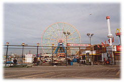
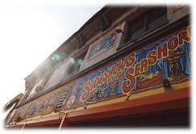
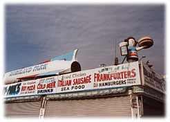

|
やるなら今夜しかない。
左右にぐらぐらと揺れる視界の中で、私はそれを確信した。
ここ数カ月もの間、ずっと考え続けてきたことだ。それをとうとうやろうという気になった。不思議と悲しみは湧いてこない。すでに現実の世の中から私という生命の一部が消え始めているのかもしれない。哀愁や痛みはひどく曖昧な暗闇に吸いこまれてしまったようで、それらがきちんとした姿で這い上がってくることはもうなさそうだった。
そもそも今日という日の記憶が定かではなかった。まだ明るい内に弁護士に会っていたことは確かで、だとすれば私はマンハッタンにいたことになる。だが、マンハッタンからブルックリンまで地下鉄をどう乗り継いで帰ってきたのか、それがよくわからない。いやそれ以前に、地下鉄に乗ったのか、イエローキャブを拾ったのか、そのあたりのことすらはっきりとしないのだ。気がつけばアパートの最寄りの駅、クラッソン・アベニュー・ステーションの階段に座りこんでいた。路上につながるコンクリートの階段に朦朧としたまま腰を下ろし、ひっくり返ってパタパタともがいている死にぞこないの蛾人間を指先でつついていた。そこをコンコースの方から突然現われた背の高い黒人警官にどやされ、おまけに尻まで蹴られ、何だかよくわからない内に駅の出入り口から追い出されていたのだ。
おそらく私は岩場に打ちつけられたクラゲのような、ぐにゃぐにゃと溶ける一方のひどく始末に負えない酔っぱらいである。酒を大量に浴びた上、顔なじみのメキシコ人バーテンダーに分けてもらったレンガ色の粉まで飲みこんでいる。化学調味料のような味がする粉だった。その粉が何であるのか、バーテンダーはスペイン語なまりの英語で色々と説明してくれたのだが、マンドラゴラがどうしたこうしたという怪しいくだり以外は何も覚えていない。どうせろくなものではないだろう。コロンビアあたりから入ってきた麻薬の一種、それもかなり質の悪いものにちがいない。
その証拠に私の視野には、見えるはずのないものがちらほらと現れ始めていた。
警官にどやされる前、蛾はたしかに人間の顔をしてあえいでいたのだ。夜が更けてから少し強く吹き始めた秋風に彼は翻弄されていた。私はもうダメだ、もう季節が味方ではないのだから、とおちょぼ口で震えていた。地下鉄の階段を駈け降りていったネズミは黄緑で、ブラックビーンズでこしらえた靴をはいていた。階段には薄桃色の水晶が散乱していて、かけらの中では小さな火がちりちりと燃えていた。酒だけの酔いならそんなものを見てしまうはずがない。プリズムが幾重にも光を分けるように、あのレンガ色の粉は私の精神の虚実の層をひとつひとつあぶり出しているのだろう。私は境界を越え始めている。やはりやるなら今夜しかない。滅ぶにはお似合いの夜だ。
黒人警官の懐中電灯が背中に向けられている。私の影は路面でゆらゆらと揺れている。頼りなげで、アルコールの臭気だけを残してそのまま蒸発してしまいそうだ。そのまま私は誰にも知られず闇に重なっていく。ブルックリンの夜は東京のそれよりもずっと深い。警官とネズミ以外、あたりをうろつく者は誰もいない。その漆黒に同化していく。
今夜なのだ。
生つばを飲みこみながら再度自分の意志を確かめる。
やることを決めてしまえば、ここ数年間の地獄絵が急に安っぽい喜劇か何かのように感じられ始めた。それを客席から他人事として眺めているような無責任さも湧いてくる。おそらくあのインチキ弁護士は終わりの見えなかったぶざまな舞台に幕を下ろしてくれたのだ。もう笑ってもいい。ずっと笑えなかったのだから声をあげて笑ってもいい。線路に飛びこんで轢死したサラリーマンの目がにたにたゆるんでいたという話を学生時代に聞かされたことがある。その首は血の泡を吹きながら「今日はここまで」と明るく絶命したらしい。あながち嘘ではないだろう。
カルロスがいつもぼやいていた。
日本人は楽しい時でも深刻な顔をしている。深刻な時にこそ笑わなきゃ。特にタカハシさん、あんたはいつも眉間にしわが寄っている。その顔、やめた方がいいよ。幸福が逃げていく。さあ、苦しかったら笑ってみて。
その言葉通り、三十代半ばの小太り男カルロスはいつも笑っている男だった。彼がいるだけで忙しい厨房がなごんだ。笑いは周囲を巻きこんで伝染していくもの。カルロスはきっと今でも、メキシコのどこかで暖かいエネルギーを振りまいて生きているはずだ。
異国のキッチンから再びやり直すことになった私の人生。メキシコでも厨房に入っていたというカルロスはいつも下ごしらえを手伝ってくれた。中途半端な英語の愚痴に耳を傾けてくれる人情家でもあった。私が復活して店を出せるようになったあかつきには調理人として雇ってもらいたいと、中米人には珍しく殊勝な言葉をささやくようなところもあった。残念ながらカルロスは私が貸した金を踏み倒してメキシコ・シティーの家族のもとに逃げ帰るという、それだけは出稼ぎ中米人にありがちないい加減なことをしてくれたのだが、しかしあのよく動く眉毛を思い出してみれば、腹立たしさはあまりやってこない。むしろなんだかこそばゆい、妙なおかしさがこみあげてくる。
口ひげを上下に動かしながら煮物の仕上がりを食い入るように見つめていたカルロス。それだけでユーモラスな雰囲気が鍋の周りに漂った。イクラの塩漬けを口に入れたまま硬直してしまったあの大袈裟な表情。カルロスはどんな時でも私の頬をゆるませることができた。疲れを忘れさせてくれた。彼はそういう人物だったのだ。
だが、彼のおかしさがよみがえったからといってニヤリとできるわけではなかった。今夜ばかりはそうはいかなかった。剽軽だったカルロスの仕草をどれだけ思い浮かべても、あるいは自身を貫く不幸のてん末に奇妙な喜劇性を覚え、それをどれだけ拡大しようと努めても、心のどこかが再び温度を持ち始めるような気配はなかった。
カルロスよ、私は疲れたのだ。すっかり消耗してしまったのだ。
もうなんだか、すべてがどうでもよくなってしまった。

クラッソン・アベニュー・ステーションからアパートまでは歩いて十分ほどの距離だ。ただしそれは酔っていない時、怪しい粉も飲みこまず、ごく普通にまっすぐに歩いたとしたら、という計算である。こんなにも重たく傾き、こんなにも何もかもが不透明で、おまけに靴をはいたネズミまで現われるような夜は、何分でアパートにたどり着けるかなんてことは単純に予測できるものではない。人生最後の一大事が待っていようと、これはこれ、それはそれだ。まっすぐに歩けないのだから仕方がない。私はやはり生まれつきどこかの出来が悪いのだ。子供の頃から運動が苦手だった。だから酔っぱらうと歩くことさえちぐはぐになる。
たとえばそれは、交互に正確に足を踏み出すことの難しさである。意識の上では右足は右前方へ、左足は左前方へと透明なベクトルを描いていても、なんたって私の脳はウイスキー樽の中にどっぷりと漬けこまれているようなものだから、昼間の海兵隊員のごとく規律正しく歩けるはずがない。右足は大きく右にそれ、左足はそれを防ごうと宙で円を描き、バランスを崩したかな、どうなるかな、傾いているぞ、いくら何でもこれは、と様々な危険信号が意識の中で交錯するコンマ何秒かの間に腰からぐしゃりと崩れ落ちてしまう。そしてそれを見た警官は罵声を浴びせてくる。
そういうことなのだ。
それが私の人生の象徴的な風景である。
間の抜けた私は常に誰かから、もしくは何かから追い立てられる。
まだ駅から十メートルも離れていない。黒人警官はしつこく懐中電灯で私を照らし続けている。だから立ち上がらなければならない。前に向かって歩かねばならない。ここで尿検査付きのブタ箱にでもぶちこまれたりしたら、レンガ色の粉を飲んだことがばれてしまう。せっかく決心したことが実行できなくなる。逃げ場のない舞台の幕がまた開いてしまう。それは避けたかった。
左手に触れるのは児童公園のフェンス。それにつかまって立ち上がる。フェンスの向こうに、ぽっかりと青くふくらんだ月が浮かんでいる。あんなふうに見えるということは、秋風が夜空の上のさらなる夜空まで吹き上がって月をふくらませているのか。それとも月がふくらんでいるからこそ、夜空の上の夜空から秋風が吹きこんでくるのか。どうもよくわからない。よくわからないけれども、ふくらんでいる月はこうやってブルックリンに浮かんでいても、私の故郷の伊豆城ケ崎あたりで輝いていても、怪しく青く美しい。地下鉄の階段に散乱していた水晶も、きっとあと十億年もすれば、あんなふうに物語る月になるのだろう。そういう未来をしっかりと想像しながら、私は踏み出さなければならない。ばらばらの原子に戻らなくてはならない。
フェンスをつかみながら、右足は右前方へ、左足は左前方へと試みる。どこかでコオロギが鳴いている。私と同じ原子の仲間だ。コオロギ・・・ここはアメリカだからクリケットか。別にどうでもいいけれど、コオロギは英語でクリケットだ。
最後の夜というのはこんなものなのだろうか。国を憂いたり、世界の邪悪を恨むような大上段な意識はやってこない。その代わり、意識のずっと向こう側で古い木材のように打ち捨てられていたどうでもいい些末な過去がやってくる。
私にはクリケットを始め、大して重要ではないと思われる英単語を一生懸命に覚えていた時期がある。あの頃は将来アメリカで生活することなど考えもしなかった。だから日本人教師のひどい発音に抵抗すら覚えず、数多く暗記すればいい、大学にさえ合格すればいいという感覚で英単語を機械的に頭に入れていた。
「クリケット、クリケット、クリケット・・・」
そう、呪文を唱えるように繰り返して。
そこで今夜初めて、ふっと、口元がゆるんだ。
「初めて使ったよ。消えちゃう夜に」
人生は悲喜劇のタペストリーである。しかしそこに於いて、悲劇と喜劇は対等ではない。悲劇はきっと、最終的な喜劇のために織りこまれているのだ。我が人生は皮肉に満ちている。そう思えばニヤリとする以外に何ができよう。
ぐらぐらと傾いて歩きながら、私は乾いた皮肉を笑ってみせる。
欧米人にまったく通用しないニセ英語を、欧米人に出くわすと尻込みしてしまう日本人教師から六年間も教えこまれる子供たち。皮肉はすでにそこから始まっているのではないか。大方の子供たちにとって、後に無意味な思い出し笑いをするためだけにその六年は費やされる。
忘却のためだけに大量に消費してきた本やノート。それも立派な脇役だ。
そう思うと、路上に落ちている紙屑がすべて過去に費やしたノートの切れ端のような気がしてきた。秋風が舞う度に、紙屑は三拍子か四拍子のリズムを刻みつつ路上を駆け抜けていく。きっと高校生の頃、私は将来使うこともない英単語らしき記号をノートに一生懸命に書きこんで覚えていたのだ。その使い捨てられたノートの亡霊が、大量の紙屑となって今目の前に現われている。
そうだ、クリケットなら綴りだって覚えている。aとtheの使い方も勉強した。どこにだっている一匹のコオロギを無作為につまみ出すならa cricket。そのコオロギを踏みつぶしたら、もうそのコオロギはどこにでもいるコオロギではなく、特定されるコオロギになるわけだからthe cricketだ。しかし、それがどうしたというのだ。私は一回もこの単語を使わなかった。この最後の夜までただの一回もだ。クリケットという綴りを記憶するために夢多き十代の貴重な時間を費やしたのに、ただの一回もそれを使わなかった。誰かに「クリケットが鳴いているね」と言った覚えがないし、手紙やメールで「最近のクリケットは・・・」と書いた記憶もない。結局、一生使わなかった。
クリケット、お前に判断能力はあるかい？
生きている間に夢中になってやらなければいけないこと。
それは本当に意味のあることなんだろうか。
そもそも生きていることに、どんな意味があるのだろう。
夜空で煌々と光っているあの月に比べれば、お前も俺も一瞬の冗談みたいなものだよ。
なあ、クリケット。見えるかい、月が。
月がぐらっと揺れて視界から消えてしまった。路面が迫ってきて、ドンという鈍い音がした。私は気がつけば前のめりに転がっていて、腰や胸を直接強打していた。しかし不思議なことに、どこにも痛みは走らなかった。もはやそういった反応は私にとって意味をなさないのかもしれない。だから何も感じない。生じないのだ。
目の前の紙屑をつかみながら身体を起こす。
痛みよりもすぐそばにやってきたのは、やはり過去だった。
紙屑には、誰かが鉛筆で書きなぐった数式の跡があった。おぼろげな記憶の中で、それは三十年近くも前に私が取り組んでいた数列の計算だという気がしてきた。父はあの頃漁に出かけたまま帰らぬ身となり、残された母はわずかばかりの土地を切り売りし、観光ホテルの仲居をしながら一人息子の私を育ててくれたのだ。母は私を漁師にはしなかった。東京の大学へ行かせてくれた。私は母の期待にこたえて、ある程度は名の知れた大学の学生になった。大学を卒業した後、サラリーマンにはならずに調理師になりたいと言った時、母はひどく困った顔をしていた。でも本当のところ、母が私の人生に対してどんな理想を掲げていたのかはわからない。調理師になりたいと言った時、母は反対もせず、賛成もしてくれなかった。厨房のアルバイトをしながら夜間の調理師学校に通い、ついに調理師の免許を取った時、母はもうこの世にいなかった。
母ちゃん、あれから色々とあったんだよ。
最後まで俺、不器用だったな。

まったくの中年男だというのに、その亡き母がどこかでまだ見守ってくれていることを針の先ほど期待して、私はちょっぴり恥ずかしくなった。後ろを振り向いてみる。警官はもういない。もちろん母がいるわけでもない。風が強くなってきたのだろうか、暗闇の中で並木がざわざわと揺れているだけだ。
伊豆も風の強い土地だった。低気圧が近付いてくると雑木林が激しく揺れ、城ケ崎のイガイガ根あたりに叩きつけられる大平洋の波が小さな街を震わせた。受験勉強本番の秋、私は多くの無意味な苦行をとめどなく続く雑木林の葉ずれの音とともに味わった。
ざわざわ、ざわざわ、因数分解。ざわざわ、ざわざわ、インテグラル。
意識の向こう側から再びどうでもいいような過去がやってくる。
「英語じゃない。最悪は数学だ」
二十年以上も前の本音が咽から出る。
そうなのだ。なぜ今頃こんなことばかり思い出しているのかわからないが、英語よりもっとひどいのは数学だった。大学受験のために勉強した対数関数とか行列とか、あるいは微分とか積分とか、ああいうものは現実の人生に一度も登場しなかった。あれはいったい何のために勉強しなければいけなかったのか大いに謎だ。ノートに一生懸命logだとかf(x)だとか書き込んで陶酔しているぐらいなら、いい女の見分け方とか、悪い男につかまらない方法だとか、人前で金を拾った時の納得の行く対処だとか、保証人を断る方法だとか、そういう実学をもっと教えた方がいいのではないか。文部省の役人がそのあたりのことをどう考えているのかいつかじっくりと聞いてみたいものだ。もっとも、これから私は十億年の遠い旅に出るので、その機会はまずやってこない。だからまあ、どうでもいい。私のささやきは私利私欲のない原子のささやきである。数学の美しさを求める者も中にはいるであろうが、それが万人のものだという受け止め方はできない。イメージの鍛練は数式をごちゃごちゃ動かしてもっともらしいことを言うよりも、もとから存在するものをじっと見つめる能力があるのかないのか、そのあたりを鍛えた方が良いのではないか。
たとえば、あの青い月だ。
月が涼し気に青くふくらんでいる。
青い青い月だ。
うさぎが今夜も餅を突いている。子供の頃にはそれがはっきりと動いて見えた。そして今再び私にはその鼓動が見える。うさぎが餅を突く度に、月が破裂しそうなぐらい真横にふくらんでいる。なつかしい妄想だ。月が破裂すると、いったいどうなるのだろう。色々と困ることが起きるにちがいない。子供の頃のある一時期、私は毎晩そんなふうに真剣に考え、心配した。それで眠れなくなって、仕方なく明け方まで月を眺めていた。
月が破裂すると、どうなるの？
地球はバランスを崩してさまよいだすの？
岩石の雨が降るの？
どうなる？
みんな消えるの？
え？
なんだって？
酒漬けの鈍い頭でも背中が一瞬反応してしまった。千鳥足の私に誰かが通り過ぎざま、何かをささやいていったのだ。枝が揺れるほどのかすかな幻聴はこんなふうに滑りこんできた。
「・・・線路でまた生まれたよ」
突然湧いた声だった。しかも声の主は私の足下を駆け抜けていった。私のもつれあった足の間をだ。シルエットを確認することはできなかったが、何かがいたとすればそれはきっとさきほどの黄緑のネズミにちがいない。なぜなら足音が細かな靴音だったからだ。
私の酩酊は深い。思ったよりもずっと深い。あるいはあのレンガ色が想像した以上に働いている、と言うべきであろうか。
ささやくネズミに・・・そう、他のことでも異変が起きていた。
腕時計を見たら長針がぐるぐると回っていた。しかし短針は三時を指したまま止まっている。これはどう解釈すべきなのか。回る長針を見ていると顔から徐々に文字盤に吸いこまれていきそうだ。
もう一度夜空を見上げる。月の涼気で心を落ち着かせようとする。
うさぎが・・・うさぎが・・・うさぎが一匹。ずっと一匹だ。
うさぎの気持ちを考えるといたたまれなくなる。寂しくて張り裂けそうだ。その孤独は永遠と思われる過去の方向から、これまた永遠と思われる未来の方向に向かってバカ正直に貫かれている。結局私などホタルの淡い一拍にも満たぬ存在で、世の中で一番大きく、銀河よりも深いものはきっと寂しさなのだ。
路上に落ちていた小石を蹴った。石は弾けたように飛んでいって、先月倒産したばかりのドラッグストアの錆びたシャッターに当たった。カンッと音がしてシャッターがわずかに揺れる。でも宇宙の寂しさはそのままだ。闇はまったく動かずに街を覆っている。
まったく・・・うじろうじろしい。
私が小石を蹴ったのではなく、小石が私を蹴ったかのようにうじろうじろしい。
うじろうじろしくだ。
なんだかね。うじろうじろしいって。
知らない言葉だし、存在しない言葉なのかもしれないけれど、とにかく私は今、何もかもがうじろうじろしい。ここ数カ月ですっかり薄くなってしまった前頭部を風がなでると特にそれを感じる。そういう按配なのだ。
ああ、これは現実の世界の話だ。黄緑のネズミや水晶はきっと幻覚で、神が私に遣わした道先案内であろう。押し寄せてくる過去のイメージもきっとそうだ。目の前にあるものを忘れさせ、正視することから私を逃そうとしている。だがここ数年の間に起きたさまざまな事件は背中に染みついたように追いかけてくる。私は急に吐きそうになる。私の毛穴から飛び出しているオーラの本質は、痛んだアボガドのように粘り気の強い不運のバッドスープである。すべての幸運は私から離れてしまった。もちろん金は無い。徹底的に無い。大学を卒業して以来の努力の結晶はいきなり出現した莫大な借金のためにすべて消え失せ、猛烈な催促と追いこみは私の胃を溶かしてしまった。取り立てだけならともかく、私はそのことで離婚まで招いてしまったのだ。最近は前妻モモコからの脅迫も鋭く、受話器からキンキンと伝わってくる声は背筋をひどく硬直させた。養育費を三ヶ月も溜め込んでいるのだから致し方ないのだが、わざわざ電話口で娘カリンを泣かせるというやり方はどうか。それは人間として真っ当なやり方なのか。
まさに、うじろうじろしい。
溺死した羊に群がる何万のウジよりもうじろうじろしい。
私はついに今日、保険会社と店のオーナーからの告訴が取り下げられたことを弁護士から伝えられた。法律上、私には何の落ち度もなかったことになる。当たり前だ。あれは放火でも過失でもなく、古いビル特有の漏電が招いた事故だったのだから。あのインチキ日系人弁護士は消防署の乱暴な検証をもう一度やり直させ、圧倒的に不利な裁判が始まる前にすべてを地平に戻してくれたのだ。しかしその代償に弁護費用として五万ドルの請求書を突きつけられた。それを収めなければ今度は弁護士から告発された上、刑務所に入ることになるというのは本当の話か。現在の私は無職である。生きる手段がない。それなのにいったいどうやってそれだけの金を用意しろと言うのか。
私は精一杯頑張った。でもダメだった。私は敗北を完全に認めている。私は敗者だ。おまけに間抜けだ。Ｎの連帯保証人になったのがすべての始まりだった。突然背負うことになった借金は、にわかには信じ難いほど莫大で根が腐っていた。私はローンを払い終えたばかりの東京の家と、やっと軌道に乗り出した自分の店を失い、さらに足りない分を埋め合わせるために、母が残してくれた伊豆の小さな土地までを手放した。
そして離婚。
たしかに妻には悪いことをしてしまった。娘にもすまなかったと思っている。だが、どうしようもなかった。
連帯保証人のとばっちりから恐慌と恐怖が始まった時、妻は毅然とした表情で離婚を切り出してきた。妻の豹変は私には理解できた。誰だってキリトリに追い込まれる生活からは逃避したくもなる。それは妻のためではない。敏感な時期を迎えた娘のためであろう。離婚することで災いを遠ざけられるなら、大胆に逃げ切った妻は正解だったと言える。妻と娘は店と家を失った東京から離れ、私とは他人になり、群馬県の見ず知らずの土地で新しい生活を始めている。そして私もまた東京を離れ、苦難ばかりを与えた日本に対してさんざん悪態をつき、マンハッタンの日本料理レストランで第二の人生を始めた。もう一度希望を持とう。そう自分に言い聞かせてニューヨークにやってきたのだ。もしもよみがえることができたのなら、そこで妻子に戻ってきてもらうという手もある。いやむしろ、そのつもりだった。すべてを失っても心をこめた料理を作り続ければ、少しはましな展開になるであろうと信じていた。それなのに、そのレストランは漏電から出た炎でいきなり焼失してしまった。私がたった一人、翌日のランチメニューを仕込むために深夜に働いていた、まさにその時にだ。おまけに店の売り上げ金は姿を消していた。私は店が燃えてしまうことで何らかの得をする人間ではない。しかしオーナーは金欲しさに私が火を付けたのではないかと疑い、保険会社は金を支払いたくない一心から私を告訴した。つまり私は双方から別々に訴えられ、拘留され、警官から罵声を浴びせられ、職を再び失い、その状態で娘に電話口で泣かれているのだ。
もう、疲れてしまった。
足腰が立たない。
これ以上、この世で人間と何かをしていく、ということが耐え切れない。
しかし私はもちろん、今でも娘カリンのことを毎日毎日大切に思っているのだ。幸せになって欲しいと願っているのだ。だから電話口で泣かれると私の胸はピクルスのガラス樽でもぶつけられたかのように激しく痛む。ひどく余裕のない心境になる。その元父親に向かって、「１ドルでもいいから送ってちょうだい」とは。「裁判所でパパと会いたくない」とは。そういう言葉を十三歳の娘に言わせる母親ははっきり言って鬼か畜生か食虫植物か、何だかそういうものではないのか。とすると私はあれか、ウツボカズラに飲み込まれたショウジョウバエか何かか。

足がつった。
こんな時にもふくらはぎがつるんだ。
人生の一大事を潔く決心したこんな清らかな夜にも酔っぱらいの筋肉はつる。
私は逝くのだ。足をひきずりながら。
児童公園の横を通り過ぎて、クラッソン・アベニューとデカブ・アベニューの交差点に出た。黒人の商店はすべて閉まっている。真夜中でも営業しているのはキプロス難民のチキン屋だけだ。チキン屋の灯りが道路にうず高く積まれたゴミ袋を照らしている。二匹のネズミが行ったり来たりしている。
ここのネズミも少々変わっていた。黄緑ではない。二匹とも朱色だ。やはりビーンズの一種、ヒヨコ豆でできた靴をはいている。そして私の方を向きながら二匹で何やら話しこんでいる。
「なんだよ」
黄緑ネズミを体験ずみの私はもう驚かず、中腰になりながら朱色のネズミたちに近づいていった。すると二匹はあっという間にゴミ袋の隙間に逃げこんでしまった。
でっぷり太ったキプロス親父が防弾ガラスの向こう側からこちらを凝視している。だが、見ているふりをしているだけなのだ。彼は目を開けていても何も受け止めてはいない。私がネズミに声をかけても、目の前を千鳥足で通り過ぎても瞳は少しも動かない。彼は生きたままカーネル・サンダースになろうとしている。
ここはまったく最低の土地だ。ブルックリンの中でも一般の人々からは警戒される、ドの字が付くほどの貧民地域だ。被生活保護者を対象にしたプロジェクトと呼ばれるアパートが立ち並び、その隙間にニューヨークで夢破れてしまった私たちのような外国人が住み着いている。英語なんかめったに耳にしない。この地域の共通語は、カリビアン難民とメキシコからの不法流入者が話すスペイン語だけだ。だがそんな土地であったとしても、日本を離れて以降、私はここにしがみついて生きるしかなかった。何もかもを失ってニューヨークにやってきた私にはマンハッタンは敷居が高すぎた。高額な賃貸料を払うことはできなかったし、それ以前の問題として私には、高飛車なアパートオーナーたちから突きつけられる入居最低条件、つまり充分な残高証明を出せなかった。だから私にはこの街がお似合いだった。もう帰るところがない人々が肩を寄せあって生きているようなこの街の臭気が私の心に湿り気を与えてくれたのだ。
日本は嫌いだ。正確に言うならば、徐々に嫌いになってしまった。帰りたいという気持ちは起きない。離ればなれになってしまった娘は私のことを思い浮かべる夜があるかもしれない。それがわかりつつも、私は娘からさえ逃げる。私は事実上破産してしまった男である。お稽古ごとすら習わせてあげられなかった貧相な男なのだ。もはや異国で漂うだけとなってしまったこの四十二歳ホンモノの厄年の男に、最愛の娘は置けるだけの距離を置いた方がいい。要するに私と娘は、金輪際他人である。その方が良いのだ。
だから私は今夜やる。父と母のもとに帰る。
ばらばらな原子に戻る。水に戻る。草に戻る。
方法は色々と考えた。
ブルックリンブリッジからイーストリバーに飛び下りるという派手な方法。しかし水面に叩きつけられた後、耳に水が入ってきてゴボゴボゴボゴボ暴れるのだと思うと、なぜかそれだけは本能的に許せなかった。これまでさばいてきた何千何万の魚の霊にもてあそばれるような気がする。恨みをもった原子の固まりになって、悲鳴をあげながら海を漂いそうだ。波間の夜光虫に化けながら、ぶつぶつと怨念を唱えていそうだ。そこを小魚に突つかれ、無限に繰り返される死を経験するのではないか。
逝くならやはり、Nみたいに自分で首をくくるに限る。
私はレストランが焼け落ちた時、紅蓮の炎にあぶられながら、そういう終わり方をすでに考えていた。あの夜、不運から逃げ切れない残りの人生を確信したのだ。だとすれば、どこかで疲れ果てて意を決してしまう夜はそう遠くない気がした。
Nと学生時代に知り合い、その後も男らしい付き合いをしたがために、こんなことになってしまった。あいつは豪放磊落な男だったから、こちらも豪放磊落に書類の字なんかろくに読みもしないで判子をバンバン押していたのだ。
二回目の不渡りを出したちょうどその昼間、Nは永福町の首都高速の非常階段に紫色のロープをかけ、そこで首を吊って死んだ。負債が数億円に及ぶと聞いた時は、あの程度のガーデニング用品屋でもそれだけの融資をしてもらっていたのだと驚いた。しかしその融資の大半がろくでもない金融組織、あるいはそれ以下のギャング絡みだとは想像もしていなかった。加えてまさかその半分が自分に降りかかってくるとは。私は誰かを騙したり、誰かを傷つけたりして金を儲けたことは一度もない。なんたって、学生時代の皿洗いから始めたレストラン街道を、調理士道を、地道に、まっすぐに歩んできたのだ。小さいながらも自分の店を営むのが私の夢だったのだ。それを二十年かけて実現したところで、一切合切が霧のように消えてしまった。何もかもが砂浜に作った城のように一夜にして消えてしまったのだ。
人生には恐ろしい罠が仕掛けられていることがある。
まさに私はそれを今味わっている。
まあ、いいけれど。どの道、人は果てるのだ。燐光のごとき人生である。
私はもうすぐ逝くのだから。
そう、逝くのだ。 （第１回了）
|